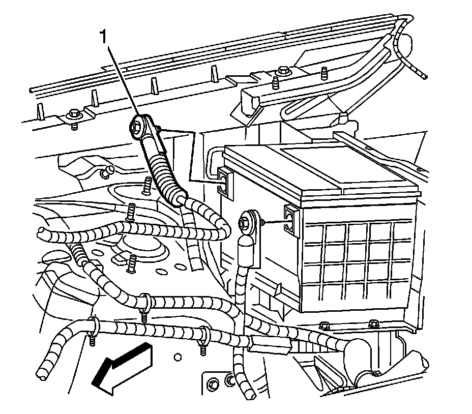
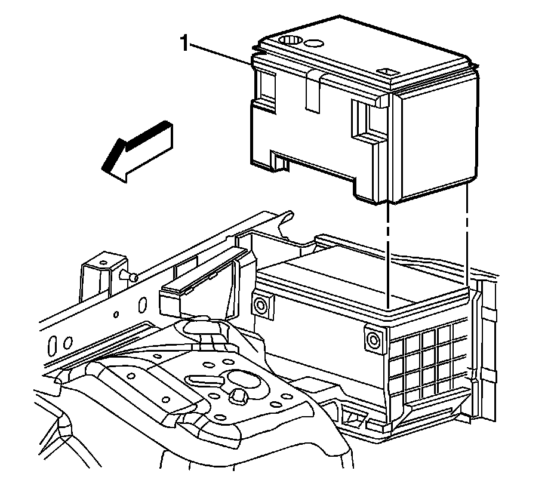
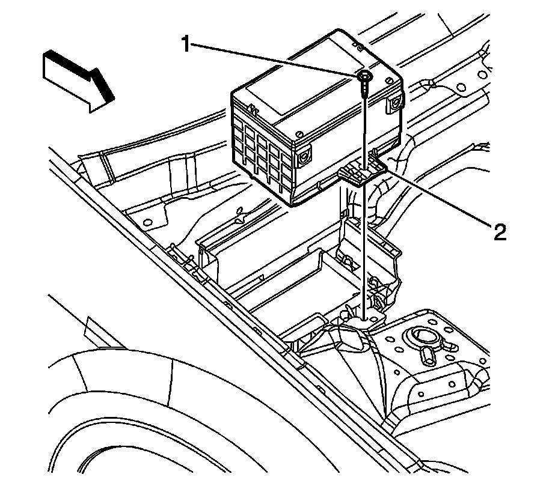

Battery Replacement
Battery Replacement (LHD)
Removal Procedure

1. Disconnect the negative battery cable. Refer to Battery Negative Cable Disconnection and Connection (LHD) (Service and Repair)Battery Negative Cable Disconnection and Connection (RHD) (Service and Repair) .
2. Remove the air inlet grille panel. Refer to Air Inlet Grille Panel Replacement (Service and Repair) .
3. Loosen the positive battery cable bolt.
4. Remove the positive battery cable (1) from the battery.

5. Remove the battery insulator (1).

6. Remove the battery hold down retainer bolt (1) and retainer (2).
7. Remove the battery from the vehicle.
Installation Procedure
1. Install the battery to the vehicle.
Notice: Refer to Fastener Notice (Fastener Notice) .
2. Install the battery hold down retainer (2) and bolt (1).
Tighten the bolt to 18 N.m (13 lb ft).
3. Install the battery insulator.
4. Position the battery positive cable (1) to the battery.
5. Tighten the positive battery cable bolt.
Tighten the bolt to 17 N.m (13 lb ft).
6. Install the air inlet grille panel. Refer to Air Inlet Grille Panel Replacement (Service and Repair) .
7. Connect the negative battery cable. Refer to Battery Negative Cable Disconnection and Connection (LHD) (Service and Repair)Battery Negative Cable Disconnection and Connection (RHD) (Service and Repair) .